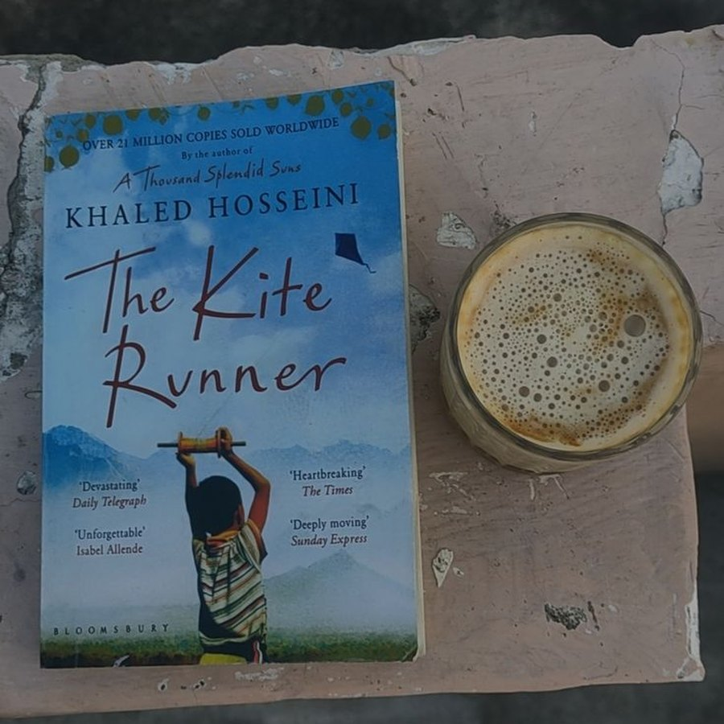
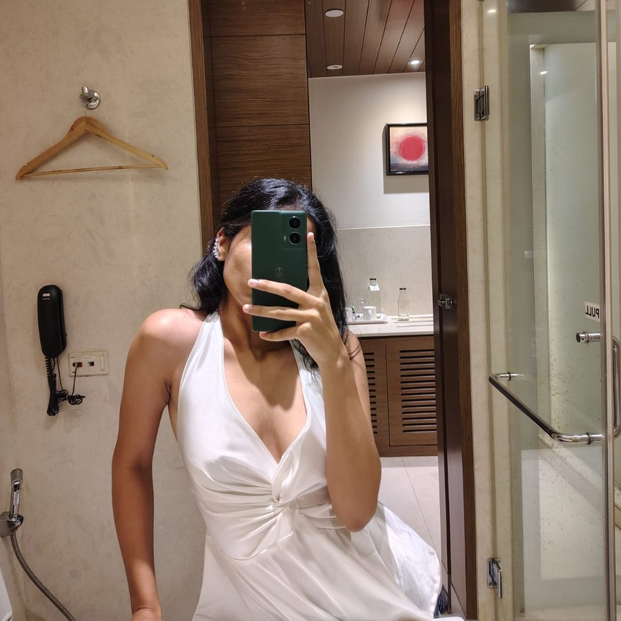
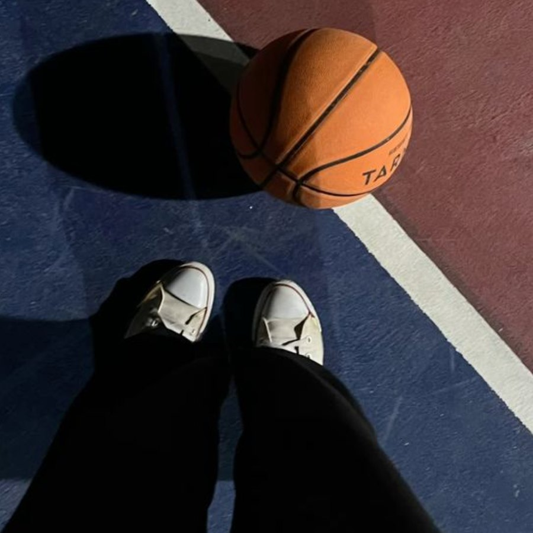

about me
the short version, written like a letter.



dear you,
hiii! I'm Riya, a hills girl from Roorkee, now somewhere between the ghats of Varanasi and a pile of unread books. This little corner is where I keep the softer stuff: the films I rewatch, the books I underline, the shers I can't stop thinking about, and the things I write when I can't sleep.
My ideal Sunday is a book, a never-ending cup of chai, and not moving from the window seat. I'm a winter person through and through: fog, shawls, oranges in the sun, all of it.
I also do poetry slams sometimes, which is a very fancy way of saying I get nervous and then say feelings out loud into a mic.
love, riya ✿

a little corner for the court
Before the books took over, there was basketball. State-level silver back in school, the Inter IIT team in college, way too many evening practices that ended with sore legs and the best kind of tired. I still think the sound of a ball swishing through the net is one of the happiest sounds in the world.